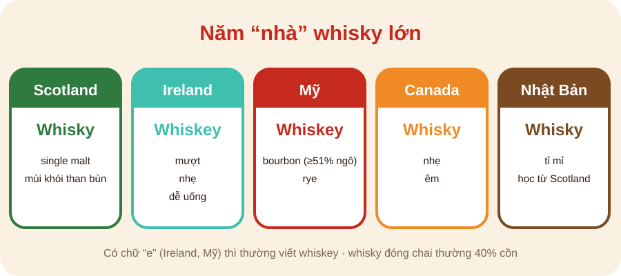

Rượu – bia
Whisky là gì? Bài tổng quan cho người chưa biết gì, như em

Các bác có để ý chai thì in “whisky”, chai lại in “whiskey” không? Không phải in sai chính tả đâu ạ 😂 Đọc mấy cuốn sách em mới vỡ ra nhiều điều, giờ em kể lại theo kiểu nhà bếp cho dễ nhớ.
Nói một câu cho dễ hiểu
Whisky là rượu mạnh nấu (chưng cất) từ ngũ cốc – lúa mạch, ngô, lúa mì, lúa mạch đen – rồi đem ủ trong thùng gỗ nhiều năm. Màu vàng hổ phách, mùi thơm vani, mật ong, trái cây khô hay khói… phần lớn là nhờ cái thùng gỗ ấy chứ không phải pha màu.
So với rượu nhà mình: rượu gạo nấu xong là uống, còn whisky nấu xong mới chỉ là “rượu non” trong veo, phải nằm trong thùng gỗ sồi ít nhất mấy năm mới được gọi là whisky. Với whisky Scotland, sách ghi tối thiểu 3 năm.
Whisky hay whiskey?
Cùng là một thứ rượu, chỉ khác cách viết theo nơi làm:
- Whisky (không có chữ e): Scotland, Canada, Nhật Bản và phần lớn các nước khác.
- Whiskey (có chữ e): Ireland và phần lớn rượu của Mỹ.
Mẹo nhớ của em: nước nào tên có chữ e (Ireland, United States) thì whiskey có chữ e 😜
Mấy loại hay gặp
- Single malt – làm hoàn toàn từ lúa mạch đã ủ mầm (mạch nha), nấu ở một nhà máy duy nhất. Giống như “xôi một nồi, một tay người nấu”, đậm chất riêng của nơi làm.
- Grain whisky – làm từ các loại ngũ cốc khác (ngô, lúa mì), vị nhẹ hơn, phần lớn dùng để pha trộn.
- Blended – trộn nhiều loại whisky từ nhiều nhà máy cho vị đều, dễ uống. Phần lớn chai whisky bán trên thế giới là loại này.
- Bourbon – whiskey Mỹ, phải có ít nhất 51% ngô, ủ trong thùng gỗ sồi mới đã đốt cháy mặt trong, nên vị ngọt, mùi vani, caramen rõ.
- Rye – whiskey Mỹ có ít nhất 51% lúa mạch đen, vị cay nồng hơn, ít ngọt hơn bourbon.
Năm “nhà” whisky lớn
- Scotland – quê hương của single malt; có vùng nổi tiếng mùi khói than bùn (giống mùi khói bếp rơm nhà mình hun lâu), có vùng nhẹ nhàng mùi hoa quả.
- Ireland – thường mượt, nhẹ, dễ uống.
- Mỹ – bourbon, rye: ngọt, đậm mùi gỗ mới.
- Canada – thường nhẹ, êm.
- Nhật Bản – học cách làm của Scotland rồi làm theo kiểu tỉ mỉ của người Nhật.
Ngoài ra Ấn Độ, Đài Loan, Úc… giờ cũng làm whisky. Sách có kể nơi nóng như Ấn Độ thì rượu “chín” nhanh hơn hẳn Scotland, vì trời nóng làm rượu ngấm gỗ nhanh.
Độ cồn bao nhiêu?
Whisky thường đóng chai khoảng 40% cồn – gấp tám lần bia, gần bằng rượu trắng quê mình. Có loại để nguyên độ từ thùng (“cask strength”) còn mạnh hơn nữa. Vì thế một ly whisky chuẩn chỉ rót chừng hai đốt ngón tay, uống từ từ, không “dô” cả ly như bia.
Em tóm lại cho dễ nhớ
| Câu hỏi | Trả lời ngắn | |---|---| | Làm từ gì? | Ngũ cốc: lúa mạch, ngô, lúa mì, lúa mạch đen | | Vì sao có màu? | Do ủ trong thùng gỗ (sồi) nhiều năm | | Single malt? | 100% mạch nha lúa mạch, một nhà máy | | Blended? | Trộn nhiều loại, nhiều nhà máy | | Bourbon? | Whiskey Mỹ, ≥ 51% ngô, thùng sồi mới đốt cháy | | Mạnh không? | Thường 40% cồn – uống ít, uống chậm |
Bài sau em kể whisky làm ra thế nào, từ hạt lúa mạch nảy mầm đến chuyện “phần của các thiên thần” bay mất trong thùng gỗ – đọc vui lắm các bác ạ.
Bài viết để tìm hiểu, không quảng cáo cho loại rượu hay thương hiệu nào. Uống để thưởng thức, đừng để say; đã uống rượu bia thì không lái xe; người dưới 18 tuổi không uống rượu bia.
Em tham khảo: The Pocket Guide To Whisky (tr. 10, 15, 30, 121); Everything You Need to Know About Whisky; The Handbook of Whisky (2012); Luật Phòng, chống tác hại của rượu, bia 2019.
Kinh nghiệm và kiến thức bếp nhà, em viết lại theo cách hiểu của em – không thay lời khuyên của bác sĩ, chuyên gia dinh dưỡng. Thấy chỗ nào chưa đúng, các bác nhắn em sửa nhé.